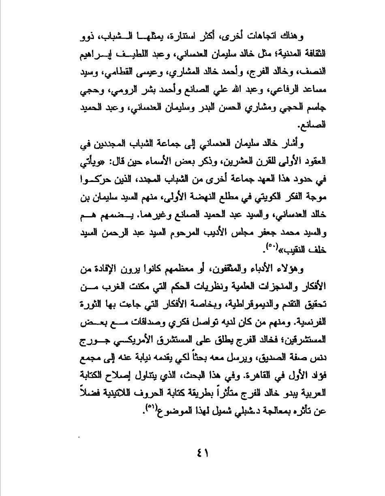

Published 2007 (second edition) · Book pages, Dr Khalifa Al-Wuqayan, Al-Thaqafa fil-Kuwait: Bawakir, Ittijahat, Riyadat, second edition, 2007
Eissa Al-Qatami as writer, reformer and «the famous captain», with Abdulwahab, Naser, Jassim and Abdulrahman, in Al-Wuqayan’s Al-Thaqafa fil-Kuwait
What it is
A history of culture in Kuwait. Page 41 names Eissa Al-Qatami among the young men of civic culture who led the first awakening. Pages 56, 115 and 332 list his three books, Dalil Al-Muhtar fi Ilm Al-Bihar, Al-Mukhtasar Al-Khass lil-Musafir wal-Tawash wal-Ghawwas and Al-Khalis min Kull Ayb li-Wad' Al-Jaib, «by the famous captain Eissa Al-Qatami», the first two printed in Baghdad in 1343 AH (1924); Kuwait Press later reprinted Al-Mukhtasar but kept the first edition’s date on the cover. Pages 158 and 159 count «the late Eissa Al-Qatami» among those who stood by the poet Saqr Al-Shabib against the zealots, and pages 164 and 165 quote his zuhayriya verses on them and say he left Kuwait in his last years and settled in Muscat until his death in 1929, «because of his discontent with the zealots, as it seems». Page 122 quotes Abdulwahab bin Eissa Al-Qatami on the «jaw», and page 330 lists his Al-Sayd wal-Tanaqqul wal-Tijara (1964). Page 59 lists the published sea log of Naser Abdulwahab Al-Qatami. Page 247 lists Jassim Al-Qatami’s story «Nihayat Bahhar» in Al-Ba’tha, August 1948. Page 273 quotes Ahmed Al-Bishr Al-Roumi remembering Abdulrahman Al-Qatami in the streets of Bombay.
Why it matters
A standard history of Kuwaiti culture places Eissa among the reformers and writers of his time, gives a reason for his move to Muscat, and records the writing of his son Abdulwahab, the sea log of Naser and an early story by Jassim.
Page copies


Notes
Only the first pages are shown here. Family members who sign in can see all 16 pages.
Others named
Sources
Dr Khalifa Al-Wuqayan, Al-Thaqafa fil-Kuwait: Bawakir, Ittijahat, Riyadat, second edition, Kuwait, 2007, pages 41, 56, 59, 115, 122 to 124, 158, 159, 164, 165, 247, 273, 330 and 332
How this text was made: The reason for Eissa’s move to Muscat is the author’s reading («as it seems»). The book does not say which Abdulrahman Al-Qatami walked with Ahmed Al-Bishr; he is linked to Abdulrahman bin Abdulaziz, who appears in Al-Bishr’s diaries.
Open in the interactive site